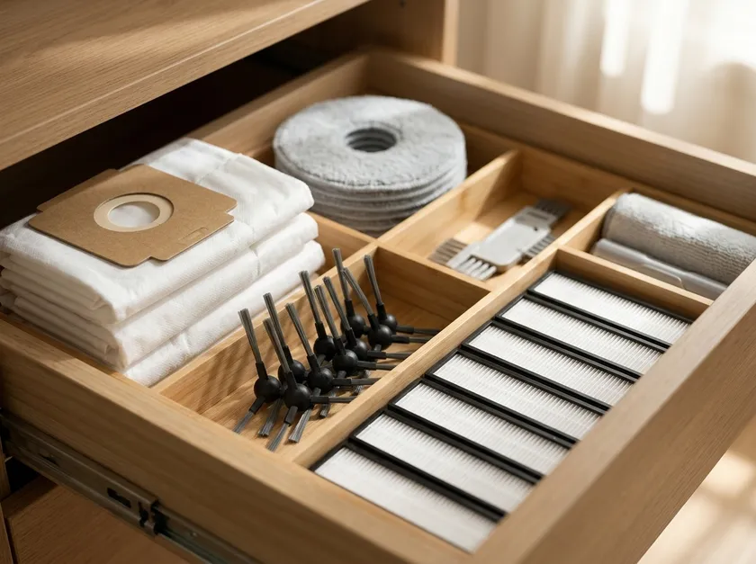
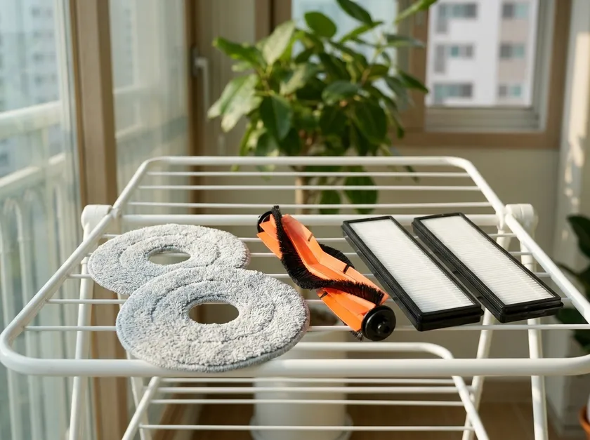

나르왈 (Narwal)
샤오미 로봇청소기 S20 소모품 교체 주기｜흡입력 살리는 필터·걸레 1년 세트
글·구성: 제이상점 · 기종별 1:1 호환 실물 점검 · 교체 주기 비교표 · 스마트스토어 패키지 안내

핵심 관리 · 선택 체크포인트
- 요즘 집에서 겪기 쉬운 원룸·서재·침실 서브 청소기로 알차게 굴리던 샤오미 로봇청소기 S20의 흡입 소리가 예전보다
- 샤오미 S20 구매 전 꼭 짚어볼 실물 부품 디테일: 호환 소모품을 고를 때 가장 먼저 살펴야 할 핵심은 컴팩트 직사각 본체 먼지통 헤파필터와 오렌지 V자 메인브러시·일체형 물걸레 패드의 정밀한 체결감입니다.
- 샤오미 S20 소모품 교체 주기 & 전용 규격 한눈 비교표: 앱 잔여 수명 퍼센트(%)와 함께 아래 실물 마모 신호를 대조해 보시면 교체 타이밍을 놓치지 않고 샤오미 S20을 최적 상태로 유지할 수 있습니다.
- 단품 구매 vs 패키지 선택, 샤오미 S20 옵션 고르는 현실 기준: 샤오미 S20은 본체 가격이 착한 만큼 정품 단품을 비싸게 사기보다
- 현재 대표 구성 기준가 60,400원대(옵션·할인 혜택에 따라 스토어 결제 화면 기준 상이)로 운영 중이니 우리 집 청소 주기와 남은 재고를 대조한 뒤 제이상점 샤오미 로봇청소기 S20 스마트스토어 상세 옵션에서 가장 실속 있는 구성을 선택해 보세요.
실물 부품 디테일 · 관리 구성 이미지




부품 규격 · 점검 기준표
| 핵심 소모품 구분 | 샤오미 S20 전용 규격 특징 | 체감 교체 신호 & 권장 관리 기준 |
|---|---|---|
| 본체 먼지통 헤파필터 | 컴팩트 직사각 주름 필터 (더스트백 미사용 기종) | 흡입력 직결 부품! 2~3개를 물세척·24시간 건조 교대하며 수시 교체 |
| 오렌지 V자·3암 브러시 | V자 메인 롤러 + 3갈래 사이드브러시 | 의자·책상 다리 주행 후 사이드브러시 가닥 변형 시 즉시 교체 |
| 하단 부착용 물걸레 패드 | S20 물걸레 플레이트 전용 극세사 패드 | 자동 세척 도크가 없으므로 청소 직후 즉시 분리해 손세탁·건조 |
💡 교체 주기가 겹치는 필터·브러시·물걸레·더스트백은 단품 배송비를 여러 번 내기보다 샤오미 S20 기간별 세트(3개월·6개월·1년)로 미리 구비해 두면 물세척 후 24시간 교대 건조까지 끊김 없이 관리할 수 있습니다.
자주 묻는 질문 (FAQ)
Q. 물걸레 청소 후 S20 패드를 본체 밑에 붙인 채로 충전 도크에 세워 두면 왜 안 좋나요?
A. 젖은 패드가 바닥과 충전 단자 근처에 계속 닿아 있으면 마루 변색과 걸레 쉰내의 원인이 됩니다. 청소 완료 알림이 뜨면 플레이트를 바로 떼어 패드를 말려 주세요.
Q. 샤오미 로봇청소기 S20의 본체 먼지통 헤파필터 규격과 관리 기준은 무엇인가요?
A. 컴팩트 직사각 주름 필터 (더스트백 미사용 기종) 규격을 사용하며, 흡입력 직결 부품! 2~3개를 물세척·24시간 건조 교대하며 수시 교체 기준으로 점검·교체하면 청소 효율을 안정적으로 유지할 수 있습니다.
Q. 샤오미 로봇청소기 S20의 오렌지 V자·3암 브러시 규격과 관리 기준은 무엇인가요?
A. V자 메인 롤러 + 3갈래 사이드브러시 규격을 사용하며, 의자·책상 다리 주행 후 사이드브러시 가닥 변형 시 즉시 교체 기준으로 점검·교체하면 청소 효율을 안정적으로 유지할 수 있습니다.
제이상점 1:1 검수 추천 패키지 · 구매 안내
메인 추천 구성
대표 구성 참고가 60,400원대 (옵션·쿠폰별 스마트스토어 결제 화면 기준)
1년 세트 (세제 미포함)6개월 세트 (세제 미포함)3개월 세트 (세제 미포함)
![[호환] 샤오미 X20+ 소모품 물걸레 더스트백 브러쉬 필터 제이상점 1년 패키지](../../assets/img/xiaomi-x20-plus-product-e55d63e6.webp)
함께 많이 찾는 보충 구성
대표 구성 참고가 56,400원대 (옵션·쿠폰별 스마트스토어 결제 화면 기준)
1년 세트 (세제 미포함)6개월 세트 (세제 미포함)3개월 세트 (세제 미포함)
☑️ 주문 전 확인해 두면 좋은 제이상점 안심 포인트
· 기종별 1:1 전용 규격 검수: 모델명·연식에 맞는 호환·정품 구성을 검수해 오주문 불안을 줄였습니다.
· 해외직배송 미리 주문 팁: 중국 구매대행·해외직배송 상품이므로 마지막 여분 1개를 꺼내 쓰는 시점에 개인통관고유부호와 함께 여유 있게 주문해 두시면 훨씬 경제적인 비용으로 끊김 없이 교체하실 수 있습니다.
· 기종별 1:1 전용 규격 검수: 모델명·연식에 맞는 호환·정품 구성을 검수해 오주문 불안을 줄였습니다.
· 해외직배송 미리 주문 팁: 중국 구매대행·해외직배송 상품이므로 마지막 여분 1개를 꺼내 쓰는 시점에 개인통관고유부호와 함께 여유 있게 주문해 두시면 훨씬 경제적인 비용으로 끊김 없이 교체하실 수 있습니다.
📖 더 많은 가정 내 사용 스토리와 상세 후기가 궁금하시다면
📱 네이버 블로그 모바일 원문 보기 ↗